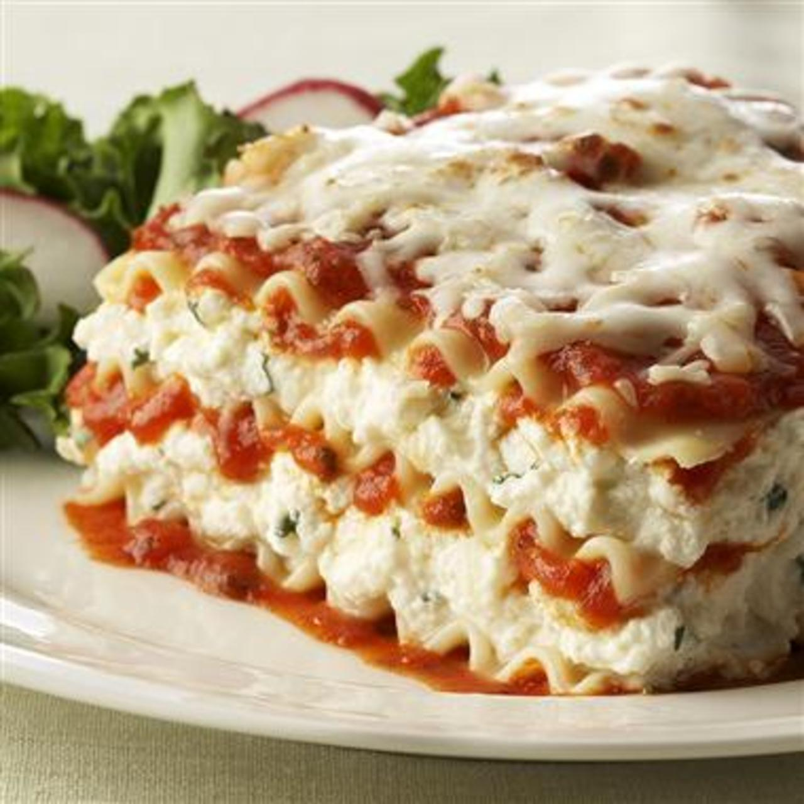

<!DOCTYPE hmtl>
<html lang="en">
</html>

<head>
	<meta charset="utf-8">
	<title>Lasagna</title>
</head>

<body>
	<h1>Lasagna</h1>
	

	<h2>Description</h2>
	<p>
		This is the lasagna recipe.  You're here now.  Unfortunately, I've never made lasagna before and do not currently have access to a lasagna recipe.
		I think that one day I might like to make a lasagna, but today is not that day.  Nor is it likely to be tomorrow or any time soon.  That being 
		said, I don't think there's anything wrong with a little preparation.  So I'll sketch out a basic recipe here.
	</p>

	<h2>Ingredients</h2>
	<ul>
		<li>Pasta -- I think they sell boxes of lasagna-type pasta -- no clue how many pasta though</li>
		<li>Water (unlimited amount) to cook the pasta</li>
		<li>Salt to put in the water</li>
		<li>Cheese, likely 2-3 types.  Skip the American cheese and go straight to mozzarrella and ricotta.  And parmesan too.</li>
		<li>Maybe some basil.</li>
		<li>Tomato sauce -- of what species and consistency I know not though.</li>
		<li>Tomato paste, since that usually goes with tomato sauce.</li>
		<li>(optional) some sort of meat
	</ul>

	<h2>Directions</h2>
	<ol>
		<li>Start by boiling some water with a lot of salt in it.  I think it's supposed to straight up taste briny.</li>
		<li>Once that's boiling, put in the lasagna pasta.</li>
		<li>Wait for that to be done.  In the meantime, maybe preheat the over to something between 300 and 500 Fahrenheit.</li>
		<li>Let the pasta cook for like 9 or 10 minutes?  It should probably be pretty al dente.  Then put it on a tray somewhere.</li>
		<li>Now in one of those glass dishes put a layer of pasta.  Also in a bowl, swirl together all the tomato stuff.</li>
		<li>Cook the optional meat.</li>
		<li>On top of the pasta, put some cheese and tomato sauce.</li>
		<li>Now put some meat.</li>
		<li>Repeat last 3 steps 4-10 times until you run out of stuff or the dish starts overflowing.</li>
		<li>Whoops, forgot the basil -- just stick some on the top.</li>
		<li>Put in the oven and bake for...1 hour?  Then take it out of the oven and see if it tastes good.</li>
	</ol>

</body>
